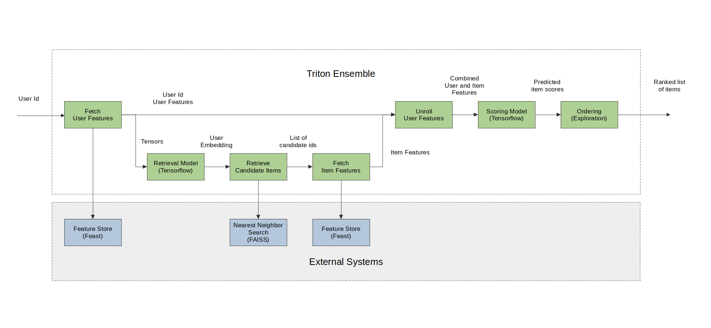

# Copyright 2021 NVIDIA Corporation. All Rights Reserved.
#
# Licensed under the Apache License, Version 2.0 (the "License");
# you may not use this file except in compliance with the License.
# You may obtain a copy of the License at
#
# http://www.apache.org/licenses/LICENSE-2.0
#
# Unless required by applicable law or agreed to in writing, software
# distributed under the License is distributed on an "AS IS" BASIS,
# WITHOUT WARRANTIES OR CONDITIONS OF ANY KIND, either express or implied.
# See the License for the specific language governing permissions and
# limitations under the License.
# ================================
Deploying a Multi-Stage RecSys into Production with Merlin Systems and Triton Inference Server
This notebook is created using the latest stable merlin-tensorflow-inference container.
At this point, when you reach out to this notebook, we expect that you have already executed the first notebook 01-Building-Recommender-Systems-with-Merlin.ipynb and exported all the required files and models.
We are going to generate recommended items for a given user query (user_id) by following the steps described in the figure below.

Merlin Systems library have the set of operators to be able to serve multi-stage recommender systems built with Tensorflow on Triton Inference Server(TIS) easily and efficiently. Below, we will go through these operators and demonstrate their usage in serving a multi-stage system on Triton.
Import required libraries and functions
At this step, we assume you already installed the tensorflow-gpu (or -cpu), feast and faiss-gpu (or -cpu) libraries when running the first notebook 01-Building-Recommender-Systems-with-Merlin.ipynb.
In case you need to install them for running this example on GPU, execute the following script in a cell.
%pip install tensorflow "feast<0.20" faiss-gpu
or the following script in a cell for CPU.
%pip install tensorflow-cpu "feast<0.20" faiss-cpu
import os
import numpy as np
import pandas as pd
import feast
import faiss
import seedir as sd
from nvtabular import ColumnSchema, Schema
from merlin.systems.dag.ensemble import Ensemble
from merlin.systems.dag.ops.session_filter import FilterCandidates
from merlin.systems.dag.ops.softmax_sampling import SoftmaxSampling
from merlin.systems.dag.ops.tensorflow import PredictTensorflow
from merlin.systems.dag.ops.unroll_features import UnrollFeatures
from merlin.systems.triton.utils import run_triton_server, run_ensemble_on_tritonserver
08/01/2022 08:15:13 PM INFO:Loading faiss with AVX2 support.
08/01/2022 08:15:13 PM INFO:Could not load library with AVX2 support due to:
ModuleNotFoundError("No module named 'faiss.swigfaiss_avx2'")
08/01/2022 08:15:13 PM INFO:Loading faiss.
08/01/2022 08:15:13 PM INFO:Successfully loaded faiss.
08/01/2022 08:15:14 PM INFO:init
/usr/local/lib/python3.8/dist-packages/cudf/utils/metadata/orc_column_statistics_pb2.py:19: DeprecationWarning: Call to deprecated create function FileDescriptor(). Note: Create unlinked descriptors is going to go away. Please use get/find descriptors from generated code or query the descriptor_pool.
DESCRIPTOR = _descriptor.FileDescriptor(
/usr/local/lib/python3.8/dist-packages/cudf/utils/metadata/orc_column_statistics_pb2.py:37: DeprecationWarning: Call to deprecated create function FieldDescriptor(). Note: Create unlinked descriptors is going to go away. Please use get/find descriptors from generated code or query the descriptor_pool.
_descriptor.FieldDescriptor(
/usr/local/lib/python3.8/dist-packages/cudf/utils/metadata/orc_column_statistics_pb2.py:30: DeprecationWarning: Call to deprecated create function Descriptor(). Note: Create unlinked descriptors is going to go away. Please use get/find descriptors from generated code or query the descriptor_pool.
_INTEGERSTATISTICS = _descriptor.Descriptor(
/usr/local/lib/python3.8/dist-packages/tritonclient/grpc/model_config_pb2.py:19: DeprecationWarning: Call to deprecated create function FileDescriptor(). Note: Create unlinked descriptors is going to go away. Please use get/find descriptors from generated code or query the descriptor_pool.
DESCRIPTOR = _descriptor.FileDescriptor(
/usr/local/lib/python3.8/dist-packages/tritonclient/grpc/model_config_pb2.py:33: DeprecationWarning: Call to deprecated create function EnumValueDescriptor(). Note: Create unlinked descriptors is going to go away. Please use get/find descriptors from generated code or query the descriptor_pool.
_descriptor.EnumValueDescriptor(
/usr/local/lib/python3.8/dist-packages/tritonclient/grpc/model_config_pb2.py:27: DeprecationWarning: Call to deprecated create function EnumDescriptor(). Note: Create unlinked descriptors is going to go away. Please use get/find descriptors from generated code or query the descriptor_pool.
_DATATYPE = _descriptor.EnumDescriptor(
/usr/local/lib/python3.8/dist-packages/tritonclient/grpc/model_config_pb2.py:335: DeprecationWarning: Call to deprecated create function FieldDescriptor(). Note: Create unlinked descriptors is going to go away. Please use get/find descriptors from generated code or query the descriptor_pool.
_descriptor.FieldDescriptor(
/usr/local/lib/python3.8/dist-packages/tritonclient/grpc/model_config_pb2.py:328: DeprecationWarning: Call to deprecated create function Descriptor(). Note: Create unlinked descriptors is going to go away. Please use get/find descriptors from generated code or query the descriptor_pool.
_MODELRATELIMITER_RESOURCE = _descriptor.Descriptor(
Register our features on feature store
The Feast feature registry is a central catalog of all the feature definitions and their related metadata(read more here). We have defined our user and item features definitions in the user_features.py and item_features.py files. With FeatureView() users can register data sources in their organizations into Feast, and then use those data sources for both training and online inference. In the user_features.py and item_features.py files, we are telling Feast where to find user and item features.
Before we move on to the next steps, we need to perform feast applycommand as directed below. With that, we register our features, we can apply the changes to create our feature registry and store all entity and feature view definitions in a local SQLite online store called online_store.db.
BASE_DIR = os.environ.get("BASE_DIR", "/Merlin/examples/Building-and-deploying-multi-stage-RecSys/")
# define feature repo path
feast_repo_path = BASE_DIR + "feature_repo/"
%cd $feast_repo_path
!feast apply
/Merlin/examples/Building-and-deploying-multi-stage-RecSys/feature_repo
/usr/local/lib/python3.8/dist-packages/feast/feature_view.py:100: DeprecationWarning: The argument 'input' is being deprecated. Please use 'batch_source' instead. Feast 0.13 and onwards will not support the argument 'input'.
warnings.warn(
No changes to registry
No changes to infrastructure
Loading features from offline store into an online store
After we execute apply and registered our features and created our online local store, now we need to perform materialization operation. This is done to keep our online store up to date and get it ready for prediction. For that we need to run a job that loads feature data from our feature view sources into our online store. As we add new features to our offline stores, we can continuously materialize them to keep our online store up to date by finding the latest feature values for each user.
When you run the feast materialize .. command below, you will see a message Materializing 2 feature views from 1995-01-01 01:01:01+00:00 to 2025-01-01 01:01:01+00:00 into the sqlite online store will be printed out.
Note that materialization step takes some time…
!feast materialize 1995-01-01T01:01:01 2025-01-01T01:01:01
Materializing 2 feature views from 1995-01-01 01:01:01+00:00 to 2025-01-01 01:01:01+00:00 into the sqlite online store.
item_features:
100%|███████████████████████████████████████████████████████████| 239/239 [00:00<00:00, 4324.36it/s]
user_features:
100%|███████████████████████████████████████████████████████████| 255/255 [00:00<00:00, 1404.11it/s]
Now, let’s check our feature_repo structure again after we ran apply and materialize commands.
# # set up the base dir to for feature store
# feature_repo_path = os.path.join(BASE_DIR, 'feature_repo')
# sd.seedir(feature_repo_path, style='lines', itemlimit=10, depthlimit=5, exclude_folders=['.ipynb_checkpoints', '__pycache__'], sort=True)
Set up Faiss index, create feature store client and objects for the Triton ensemble
Create a folder for faiss index path
if not os.path.isdir(os.path.join(BASE_DIR + 'faiss_index')):
os.makedirs(os.path.join(BASE_DIR + 'faiss_index'))
Define paths for ranking model, retrieval model, and faiss index path
faiss_index_path = BASE_DIR + 'faiss_index' + "/index.faiss"
retrieval_model_path = BASE_DIR + "query_tower/"
ranking_model_path = BASE_DIR + "dlrm/"
QueryFaiss operator creates an interface between a FAISS Approximate Nearest Neighbors (ANN) Index and Triton Infrence Server. For a given input query vector, we do an ANN search query to find the ids of top-k nearby nodes in the index.
setup_faiss is a utility function that will create a Faiss index from an embedding vector with using L2 distance.
from merlin.systems.dag.ops.faiss import QueryFaiss, setup_faiss
item_embeddings = np.ascontiguousarray(
pd.read_parquet(BASE_DIR + "item_embeddings.parquet").to_numpy()
)
setup_faiss(item_embeddings, faiss_index_path)
WARNING clustering 239 points to 32 centroids: please provide at least 1248 training points
Create feature store client.
feature_store = feast.FeatureStore(feast_repo_path)
Fetch user features with QueryFeast operator from the feature store. QueryFeast operator is responsible for ensuring that our feast feature store can communicate correctly with tritonserver for the ensemble feast feature look ups.
from merlin.systems.dag.ops.feast import QueryFeast
user_features = ["user_id_raw"] >> QueryFeast.from_feature_view(
store=feature_store,
view="user_features",
column="user_id_raw",
include_id=False,
)
/usr/local/lib/python3.8/dist-packages/merlin/systems/dag/ops/feast.py:15: DeprecationWarning: `np.float` is a deprecated alias for the builtin `float`. To silence this warning, use `float` by itself. Doing this will not modify any behavior and is safe. If you specifically wanted the numpy scalar type, use `np.float64` here.
Deprecated in NumPy 1.20; for more details and guidance: https://numpy.org/devdocs/release/1.20.0-notes.html#deprecations
ValueType.FLOAT: (np.float, False, False),
Retrieve top-K candidate items using retrieval model that are relevant for a given user. We use PredictTensorflow() operator that takes a tensorflow model and packages it correctly for TIS to run with the tensorflow backend.
# prevent TF to claim all GPU memory
from merlin.models.loader.tf_utils import configure_tensorflow
configure_tensorflow()
<function tensorflow.python.dlpack.dlpack.from_dlpack(dlcapsule)>
topk_retrieval = 100
retrieval = (
user_features
>> PredictTensorflow(retrieval_model_path)
>> QueryFaiss(faiss_index_path, topk=topk_retrieval)
)
2022-08-01 20:01:10.368513: I tensorflow/core/platform/cpu_feature_guard.cc:152] This TensorFlow binary is optimized with oneAPI Deep Neural Network Library (oneDNN) to use the following CPU instructions in performance-critical operations: SSE3 SSE4.1 SSE4.2 AVX
To enable them in other operations, rebuild TensorFlow with the appropriate compiler flags.
2022-08-01 20:01:11.486337: I tensorflow/core/common_runtime/gpu/gpu_device.cc:1525] Created device /job:localhost/replica:0/task:0/device:GPU:0 with 16249 MB memory: -> device: 0, name: Quadro GV100, pci bus id: 0000:2d:00.0, compute capability: 7.0
08/01/2022 08:01:13 PM WARNING:No training configuration found in save file, so the model was *not* compiled. Compile it manually.
# Filter out anything that was in the user's current session
filtering = retrieval["candidate_ids"] >> FilterCandidates(
filter_out=user_features["item_id_seen"]
)
Fetch item features for the candidate items that are retrieved from the retrieval step above from the feature store.
item_features = filtering >> QueryFeast.from_feature_view(
store=feature_store,
view="item_features",
column="candidate_ids",
output_prefix="item",
include_id=True,
)
Merge the user features and items features to create the all set of combined features that were used in model training using UnrollFeatures operator which takes a target column and joins the “unroll” columns to the target. This helps when broadcasting a series of user features to a set of items.
user_features_to_unroll = [
"user_id",
"user_shops",
"user_profile",
"user_group",
"user_gender",
"user_age",
"user_consumption_2",
"user_is_occupied",
"user_geography",
"user_intentions",
"user_brands",
"user_categories",
"item_id_seen"
]
combined_features = item_features >> UnrollFeatures(
"item_id", user_features[user_features_to_unroll]
)
Rank the combined features using the trained ranking model, which is a DLRM model for this example. We feed the path of the ranking model to PredictTensorflow() operator.
ranking = combined_features >> PredictTensorflow(ranking_model_path)
For the ordering we use SoftmaxSampling() operator. This operator sorts all inputs in descending order given the input ids and prediction introducing some randomization into the ordering by sampling items from the softmax of the predicted relevance scores, and finally returns top-k ordered items.
top_k=10
ordering = combined_features["item_id_raw"] >> SoftmaxSampling(
relevance_col=ranking["click/binary_classification_task"], topk=top_k, temperature=20.0
)
Export Graph as Ensemble
The last step is to create the ensemble artifacts that TIS can consume. To make these artifacts import the Ensemble class. This class represents an entire ensemble consisting of multiple models that run sequentially in TIS initiated by an inference request. It is responsible with interpreting the graph and exporting the correct files for TIS.
When we create an Ensemble object we feed the graph and a schema representing the starting input of the graph. After we create the ensemble object, we export the graph, supplying an export path for the ensemble.export() function. This returns an ensemble config which represents the entire inference pipeline and a list of node-specific configs.
Create the folder to export the models and config files.
request_schema = Schema(
[
ColumnSchema("user_id_raw", dtype=np.int32),
]
)
if not os.path.isdir(os.path.join(BASE_DIR + 'poc_ensemble')):
os.makedirs(os.path.join(BASE_DIR + 'poc_ensemble'))
# define the path where all the models and config files exported to
export_path = os.path.join(BASE_DIR + 'poc_ensemble')
ensemble = Ensemble(ordering, request_schema)
ens_config, node_configs = ensemble.export(export_path)
---------------------------------------------------------------------------
ValueError Traceback (most recent call last)
Input In [21], in <cell line: 4>()
1 # define the path where all the models and config files exported to
2 export_path = os.path.join(BASE_DIR + 'poc_ensemble')
----> 4 ensemble = Ensemble(ordering, request_schema)
5 ens_config, node_configs = ensemble.export(export_path)
File /usr/local/lib/python3.8/dist-packages/merlin/systems/dag/ensemble.py:51, in Ensemble.__init__(self, ops, schema, name, label_columns)
37 """_summary_
38
39 Parameters
(...)
48 List of strings representing label columns, by default None
49 """
50 self.graph = Graph(ops)
---> 51 self.graph.construct_schema(schema)
52 self.name = name
53 self.label_columns = label_columns or []
File /usr/local/lib/python3.8/dist-packages/merlin/dag/graph.py:73, in Graph.construct_schema(self, root_schema, preserve_dtypes)
70 def construct_schema(self, root_schema: Schema, preserve_dtypes=False) -> "Graph":
71 nodes = list(postorder_iter_nodes(self.output_node))
---> 73 self._compute_node_schemas(root_schema, nodes, preserve_dtypes)
74 self._validate_node_schemas(root_schema, nodes, preserve_dtypes)
76 return self
File /usr/local/lib/python3.8/dist-packages/merlin/dag/graph.py:80, in Graph._compute_node_schemas(self, root_schema, nodes, preserve_dtypes)
78 def _compute_node_schemas(self, root_schema, nodes, preserve_dtypes=False):
79 for node in nodes:
---> 80 node.compute_schemas(root_schema, preserve_dtypes=preserve_dtypes)
File /usr/local/lib/python3.8/dist-packages/merlin/dag/node.py:179, in Node.compute_schemas(self, root_schema, preserve_dtypes)
176 if not self.selector and self.parents[0].selector and (self.parents[0].selector.names):
177 self.selector = parents_selector
--> 179 self.input_schema = self.op.compute_input_schema(
180 root_schema, parents_schema, deps_schema, self.selector
181 )
183 self.selector = self.op.compute_selector(
184 self.input_schema, self.selector, parents_selector, dependencies_selector
185 )
187 prev_output_schema = self.output_schema if preserve_dtypes else None
File /usr/local/lib/python3.8/dist-packages/merlin/dag/base_operator.py:79, in BaseOperator.compute_input_schema(self, root_schema, parents_schema, deps_schema, selector)
55 def compute_input_schema(
56 self,
57 root_schema: Schema,
(...)
60 selector: ColumnSelector,
61 ) -> Schema:
62 """Given the schemas coming from upstream sources and a column selector for the
63 input columns, returns a set of schemas for the input columns this operator will use
64 Parameters
(...)
77 The schemas of the columns used by this operator
78 """
---> 79 self._validate_matching_cols(
80 parents_schema + deps_schema, selector, self.compute_input_schema.__name__
81 )
83 return parents_schema + deps_schema
File /usr/local/lib/python3.8/dist-packages/merlin/dag/base_operator.py:199, in BaseOperator._validate_matching_cols(self, schema, selector, method_name)
197 missing_cols = [name for name in selector.names if name not in schema.column_names]
198 if missing_cols:
--> 199 raise ValueError(
200 f"Missing columns {missing_cols} found in operator"
201 f"{self.__class__.__name__} during {method_name}."
202 )
ValueError: Missing columns ['item_id_seen'] found in operatorSubsetColumns during compute_input_schema.
Let’s check our export_path structure
Starting Triton Server
It is time to deploy all the models as an ensemble model to Triton Inference Serve TIS. After we export the ensemble, we are ready to start the TIS. You can start triton server by using the following command on your terminal:
tritonserver --model-repository=/ensemble_export_path/ --backend-config=tensorflow,version=2
For the --model-repository argument, specify the same path as the export_path that you specified previously in the ensemble.export method. This command will launch the server and load all the models to the server. Once all the models are loaded successfully, you should see READY status printed out in the terminal for each loaded model.
Retrieving Recommendations from Triton
Once our models are successfully loaded to the TIS, we can now easily send a request to TIS and get a response for our query with send_triton_request utility function.
from merlin.systems.triton.utils import send_triton_request
from merlin.core.dispatch import make_df
# create a request to be sent to TIS
request = make_df({"user_id": [1]})
request["user_id"] = request["user_id"].astype(np.int32)
outputs = ensemble.graph.output_schema.column_names
response = send_triton_request(request, outputs)
response
Note that these item ids are encoded values, not the raw original values. We will eventually create the reverse dictionary lookup functionality to be able to map these encoded item ids to their original raw ids with one-line of code. But if you really want to do it now, you can easily map these ids to their original values using the unique.item_id.parquet file stored in the categories folder.
That’s it! You finished deploying a multi-stage Recommender Systems on Triton Inference Server using Merlin framework.